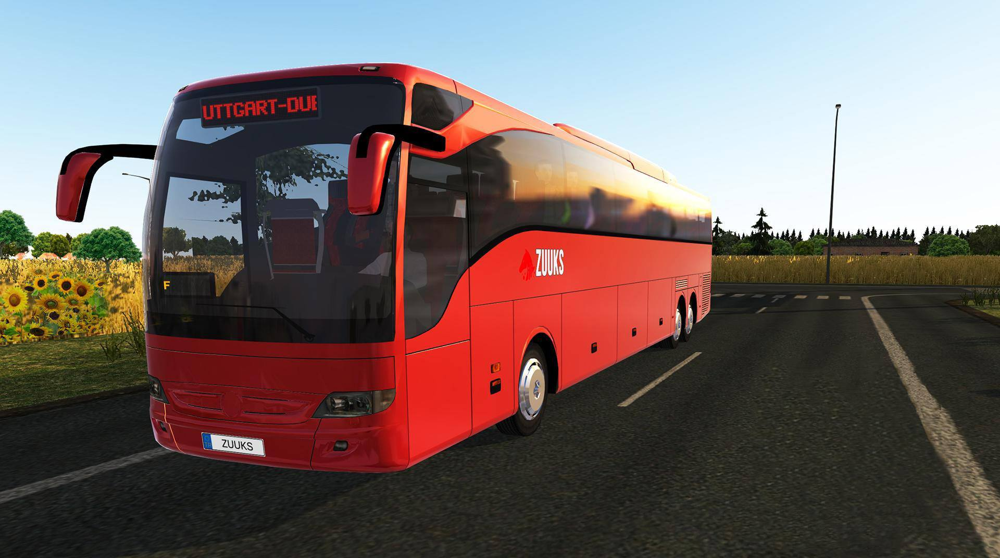

of Stony Brook University
The goal of this project is to simulate the bus transportation system of SBU. During tuesdays and thursday, vast majority of the STEM classes took place. Therefore, there were many students on campus. The primary mode of transportation on campus is the bus. When it rained or snowed, everyone waits on the bus. And often the queue gets very long.
The program attempts to find how long it will take for a student or a group of student to reach their classes based of various variables. Such as, length of the queue, number of buses on the route, individual or group, number of stops to reach the destination etc. The program takes these variables as inputs and runs the simulation.
The project development and testing was done by me. Used Java.